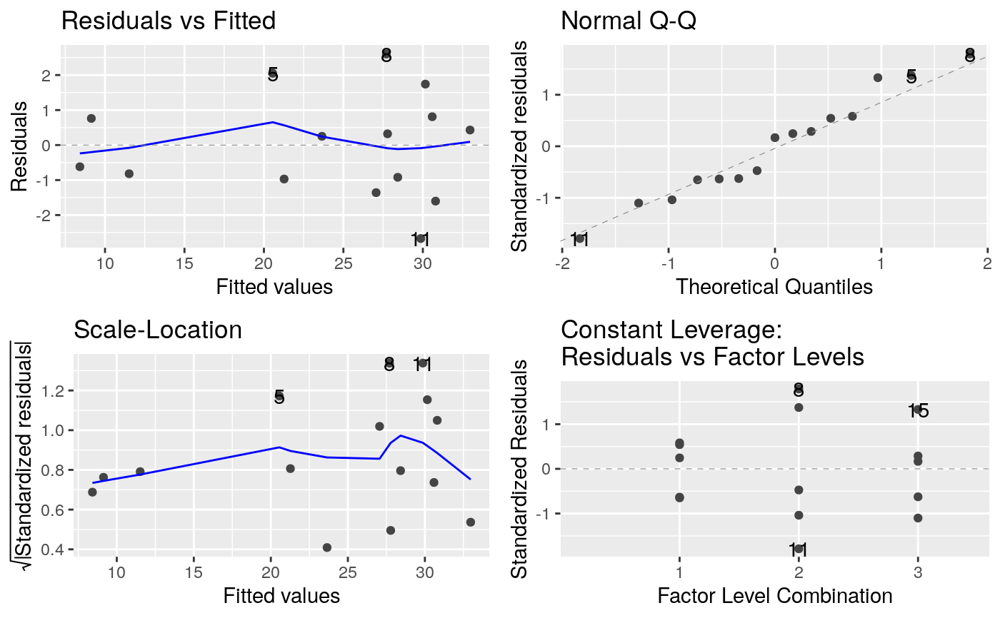

R/example2.R
example2.RdPetersen (1994, p. 125) describes an experiment conducted to assess the effects of five different quantities of N-fertiliser (0, 35, 70, 105 and 140 kg N/ha) on root dry matter yield of sugar beet (t/ha) with three complete replications laid out in three randomized complete blocks. One objective of this experiment was to determine the amount of fertilizer for maximizing yield.
The first stage of the analysis is the calculation of raw polynomial powers of N using the poly() function. The N rates are re-scaled by division by 100 to improve numerical stability.
The second stage fits a full polynomial analysis of variance based on polynomial contrasts which are fitted in sequence from the lowest to the highest. This is equivalent to the analysis shown in Tables 4 and 5 of Piepho and Edmondson (2018) except that a complete partition into single degree of freedom polynomial contrasts is shown here compared with the pooled 'lack of fit' term shown in Tables 4 and 5.
The third stage fits a quadratic regression model with linear and quadratic terms only. This model provides the model coefficients, standard errors and the confidence intervals shown in Table 6 of Piepho and Edmondson (2018). A set of diagnostic plots are fitted for the fitted quadratic regression model to check the validity of the model assumptions.
Finally, a smoothed quadratic graph of the yield versus the N rate is plotted to show the goodness of fit of the quadratic regression model. This plot corresponds to plot Fig 3 in Piepho and Edmondson (2018).
agriTutorial: return to home page if you want to select a different example
Petersen, R. G. (1994). Agricultural Field Experiments: Design and Analysis. CRC Press.
Kenward, M. G., & Roger, J. H. (1997). Small sample inference for fixed effects from restricted maximum likelihood. Biometrics, 53, 983–997.
Piepho, H., & Edmondson, R. (2018). A tutorial on the Statistical Analysis of Factorial Experiments with Qualitative and Quantitative treatment factor levels. Journal of Agronomy and Crop Science. (https://onlinelibrary.wiley.com/doi/full/10.1111/jac.12267).
library(broom) library(broom.mixed) library(dplyr) library(emmeans) library(ggfortify) library(ggplot2) library(lmerTest) library(magrittr) library(tidyr) options(contrasts = c('contr.treatment', 'contr.poly')) ##----fm2.1---- fm2.1 <- lm(yield ~ Replicate + nrate + I(nrate^2) + I(nrate^3) + I(nrate^4), data = beet) fm2.1.ANOVA <- anova(fm2.1) ##----fm2.1.ANOVA---- fm2.1.ANOVA#> Analysis of Variance Table #> #> Response: yield #> Df Sum Sq Mean Sq F value Pr(>F) #> Replicate 2 26.32 13.16 3.7118 0.07238 . #> nrate 1 651.47 651.47 183.7364 8.429e-07 *** #> I(nrate^2) 1 260.50 260.50 73.4710 2.649e-05 *** #> I(nrate^3) 1 1.59 1.59 0.4476 0.52232 #> I(nrate^4) 1 0.00 0.00 0.0011 0.97450 #> Residuals 8 28.37 3.55 #> --- #> Signif. codes: 0 ‘***’ 0.001 ‘**’ 0.01 ‘*’ 0.05 ‘.’ 0.1 ‘ ’ 1##----fm2.2---- fm2.2 <- lm(yield ~ Replicate + nrate + I(nrate^2), data = beet) fm2.2.Coef <- summary(fm2.2)$coef ##----fm2.2.Coef---- fm2.2.Coef#> Estimate Std. Error t value Pr(>|t|) #> (Intercept) 9.139047619 1.1330651944 8.0657739 1.095923e-05 #> Replicate2 -0.720000000 1.0946449740 -0.6577475 5.255511e-01 #> Replicate3 2.380000000 1.0946449740 2.1742209 5.477791e-02 #> nrate 0.417768707 0.0318291636 13.1253436 1.252108e-07 #> I(nrate^2) -0.002033042 0.0002180131 -9.3253201 3.003697e-06#> [1] 9.692381fm2.2.Coef[4, 1]#> [1] 0.4177687fm2.2.Coef[5, 1]#> [1] -0.002033042#> 2.5 % 97.5 % #> (Intercept) 6.614421038 11.663674200 #> Replicate2 -3.159020996 1.719020996 #> Replicate3 -0.059020996 4.819020996 #> nrate 0.346848911 0.488688503 #> I(nrate^2) -0.002518805 -0.001547278##----fm2.2.Plot2---- ggplot(data = beet, mapping = aes(x = nrate, y = yield)) + geom_point(shape = 1) + stat_summary(fun.y = mean, geom = "point") + geom_smooth(method = lm, formula = y ~ poly(x, 2)) + labs( x = "Amont of nitrogen (kg)" , y = "Yield" , title = "Fig 3 Yield versus N for sugar beet with 95% confidence band" ) + theme_bw() + theme(plot.title = element_text(hjust = 0.5))